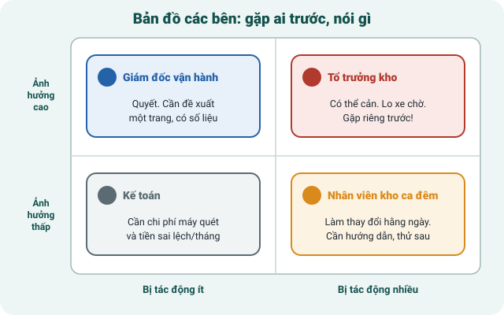

K2 · Trình bày và viết rõ ràng › Bậc 4 Thành thạo
Thuyết phục và đàm phán khi không có chức danh quản lý
Bài này làm Tờ 3: Bản đồ các bên và đề xuất một trang. Mẫu in. Bài nối tiếp Đề xuất cải tiến (Bậc 3).
1. Mục tiêu
- Lập bản đồ các bên liên quan: ai quyết, ai bị ảnh hưởng, mỗi người được và mất gì.
- Viết đề xuất một trang: số liệu, hai phương án, rủi ro, một đề nghị cụ thể.
2. Khởi động truy xuất
- Quyết định dễ đảo ngược và khó đảo ngược cần mức thông tin khác nhau thế nào?
- Khi trình quyết định, cần tách ba phần nào?
Đáp án
- Dễ đảo ngược: quyết nhanh, thử nhỏ. Khó đảo ngược: cần thêm dữ liệu, người duyệt, dự phòng.
- Điều đã biết, điều đang giả định, điều chưa biết.
Xem lại: Quyết định khi thiếu thông tin.
3. Giải thích
Senior thường thấy vấn đề trước người khác. Nhưng bạn không có quyền ra lệnh. Muốn thay đổi xảy ra, bạn phải thuyết phục.
Ảnh hưởng không cần chức danh đến từ ba nguồn: chuyên môn đáng tin, quan hệ tốt, và đề xuất làm lợi cho người nghe.
Bước 1. Lập bản đồ các bên. Liệt kê người quyết, người bị ảnh hưởng, người có thể cản. Với mỗi người, ghi: họ quan tâm điều gì, được gì, mất gì.
Bước 2. Gặp riêng trước khi họp. Hỏi ý người bị ảnh hưởng nhiều nhất. Sửa đề xuất theo góp ý thật. Đừng để họ nghe lần đầu trong cuộc họp.
Bước 3. Viết đề xuất một trang. Vấn đề có số liệu. Hai phương án, mỗi phương án có chi phí và rủi ro. Đề xuất của bạn và lý do. Một đề nghị cụ thể: cần ai quyết gì, trước ngày nào.

Đàm phán theo lợi ích. Lập trường là điều người ta đòi, như "không đổi phần mềm". Lợi ích là lý do đằng sau, như "sợ ca đêm bị rối". Hãy hỏi "Điều gì làm anh chị lo nhất?". Giải pháp thường nằm ở lợi ích, không nằm ở lập trường.
Tờ 3. Đề xuất một trang
- Vấn đềMột câu, có số liệu và thời gian.
- Hai phương ánChi phí, lợi ích, rủi ro mỗi phương án.
- Đề xuất và lý doGắn với điều người quyết quan tâm.
- Đã hỏi ý aiHọ góp gì, bạn đã sửa gì.
- Đề nghị cụ thểAi quyết gì, trước ngày nào.
Thuyết phục không phải là ép. Nếu nghe xong bạn thấy mình sai, hãy đổi đề xuất. Đó là lý do người khác tin bạn.
4. Ví dụ tại nơi làm việc Việt Nam
Tình huống giả định. Chị Mai là chuyên viên kế hoạch chính ở một công ty phân phối hàng tiêu dùng tại Hải Phòng. Mỗi tháng kho kiểm kê sai lệch khoảng 2% giá trị hàng. Chị muốn đổi sang quét mã vạch khi nhập, xuất.
Chị không quản lý kho. Chị lập bản đồ các bên. Giám đốc vận hành quyết. Tổ trưởng kho bị tác động nhiều nhất. Kế toán quan tâm chi phí.
Chị gặp riêng tổ trưởng kho. Anh nói: "Quét mã thì chậm, ca đêm không kịp xe." Đó là lập trường. Chị hỏi tiếp điều anh lo nhất. Lợi ích thật: không để xe giao hàng phải chờ.
Chị sửa đề xuất. Thử quét mã ở ca ngày trước, 4 tuần. Ca đêm làm sau khi đã quen. Chị đo thời gian xếp hàng lên xe ở cả hai cách.
Đề xuất một trang có: sai lệch 2% mỗi tháng, hai phương án, chi phí máy quét, rủi ro chậm xe. Đề nghị: giám đốc duyệt thử 4 tuần trước ngày 30.
Giám đốc duyệt. Tổ trưởng kho tự đứng ra giải thích cho tổ.
Vì sao cách này tốt: chị tìm ra lợi ích sau lập trường. Người bị tác động nhiều nhất được góp ý trước. Đề nghị cuối có người, việc và hạn.
5. Thực hành
Tình huống giả định. Bạn là kỹ sư chất lượng chính ở một nhà máy thực phẩm tại Long An. Bạn muốn đổi lịch vệ sinh máy từ cuối tuần sang cuối mỗi ca, để giảm lỗi vi sinh. Quản đốc sản xuất phản đối vì sợ giảm sản lượng.
Lập bản đồ 3–4 bên. Tìm lợi ích sau lập trường của quản đốc. Viết đề nghị cụ thể ở cuối đề xuất.
Gợi ý 1
Quản đốc được đánh giá theo chỉ số nào? Lỗi vi sinh có làm hỏng chỉ số đó không?
Gợi ý 2
Có cách thử nhỏ nào giúp quản đốc thấy sản lượng thật, thay vì đoán?
Lời giải mẫu
- Các bên: giám đốc nhà máy (quyết); quản đốc sản xuất (bị tác động, có thể cản).
- Các bên khác: tổ vệ sinh (làm thêm việc); phòng kinh doanh (lo khách trả hàng).
- Lập trường của quản đốc: "không đổi lịch". Lợi ích: giữ sản lượng ca, không bị đánh giá thấp.
- Điểm chung: lô bị hủy vì lỗi vi sinh cũng làm giảm sản lượng đạt.
- Đề xuất: thử 15 phút vệ sinh cuối ca ở một dây chuyền trong 3 tuần. Đo cả sản lượng đạt và số lô lỗi.
- Đề nghị cụ thể: giám đốc nhà máy duyệt thử nghiệm trước thứ Sáu. Quản đốc chọn dây chuyền thử.
(Số liệu là giả định.)
6. Tự kiểm tra
Chọn đáp án. Mỗi lựa chọn đều có giải thích.
Câu 1. Đồng nghiệp nói: "Tôi không đồng ý dùng mẫu báo cáo mới." Câu hỏi nào giúp tìm lợi ích sau lập trường?
-
Chưa đúng. Câu này công kích người, làm họ phòng thủ, không tìm ra điều họ lo.
-
Đúng. Đúng. Câu hỏi mở giúp tìm ra lý do thật, nơi thường có giải pháp chung.
-
Chưa đúng. Dựa vào quyền của người khác có thể ép được hôm nay, nhưng mất sự ủng hộ thật.
Câu 2. Ai nên được nghe đề xuất trước cuộc họp?
-
Chưa đúng. Người bị tác động nghe lần đầu trong họp dễ phản đối để tự bảo vệ.
-
Đúng. Đúng. Góp ý của họ giúp sửa đề xuất, và họ dễ ủng hộ hơn.
-
Chưa đúng. Người quyết quan trọng, nhưng người bị tác động có thể làm đề xuất thất bại khi triển khai.
Câu 3. Phần cuối của đề xuất một trang nên là gì?
-
Chưa đúng. Không có đề nghị cụ thể thì đề xuất dễ bị để đó.
-
Chưa đúng. Danh sách dài làm loãng ý. Người quyết cần biết phải làm gì.
-
Đúng. Đúng. Đề nghị cụ thể biến đề xuất thành một việc có người và hạn.
Câu 4. Khi nghe góp ý, bạn nhận ra đề xuất của mình có lỗi lớn. Bạn nên làm gì?
-
Đúng. Đúng. Đổi ý khi có bằng chứng làm chuyên môn của bạn đáng tin hơn.
-
Chưa đúng. Đề xuất lỗi được duyệt sẽ gây hại, và làm bạn mất uy tín lâu dài.
-
Chưa đúng. Giấu điểm yếu đã biết là thiếu trung thực, và rủi ro vẫn còn đó.
7. Phản tư
- Lần gần nhất đề xuất của bạn không được duyệt, bạn đã gặp riêng ai trước chưa?
- Một "lập trường" bạn hay nghe ở chỗ làm là gì? Lợi ích đằng sau có thể là gì?
8. Áp dụng thật
Trong 7 ngày tới, chọn một thay đổi bạn muốn đề xuất. Làm Tờ 3. Gặp riêng ít nhất một người bị tác động nhiều nhất trước khi trình.
9. Siêu dữ liệu
| skill | K2 · Trình bày và viết rõ ràng |
|---|---|
| level | Bậc 4 · Thành thạo |
| group | N4 |
| framework_map | WEF: Leadership and social influence; CSfW: 2a Communicate for work; 2b Connect and work with others; SkillsFuture CCS: Communication; Influence; NACE: Communication; Leadership; LifeComp: S3 Collaboration (chỉ dẫn chiếu) |
| updated | 2026-11-14 |
Hoàn thành bài
Đánh dấu đã học để site gợi ý lịch ôn sau 1, 3 và 7 ngày. Dữ liệu chỉ lưu trên máy của bạn.
Lịch ôn gợi ý: